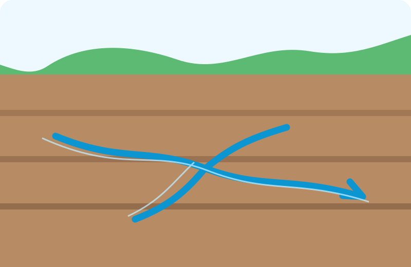
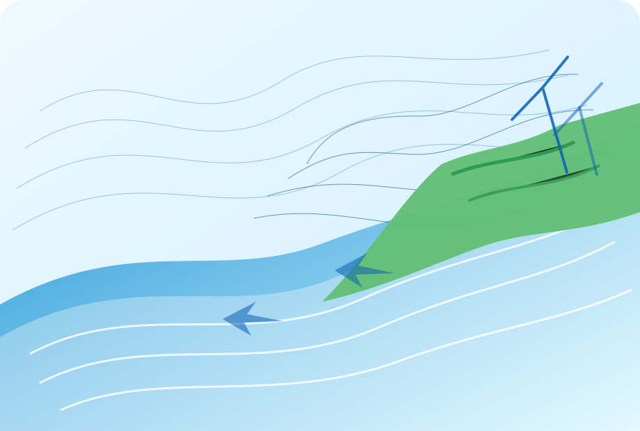

Flood Modelling and River Capacity Analysis
Category: Hydraulic & flood modelling
1D/2D flood simulation to evaluate river capacity, floodplain extent, and infrastructure performance under design rainfall scenarios.
Use this page to showcase representative projects. Replace the example cards below with real project names, locations, tools, and outcomes.
Category: Hydraulic & flood modelling
1D/2D flood simulation to evaluate river capacity, floodplain extent, and infrastructure performance under design rainfall scenarios.
Category: Coastal & marine modelling
Hydrodynamic and wave-current analysis to support coastal planning, inundation assessment, and sediment-transport interpretation.

Category: Hydrogeology
Numerical groundwater flow simulation for aquifer assessment, pumping impact analysis, and sustainable water-resource planning.

Category: Hydrology & climate
Rainfall, runoff, design flood, water availability, and climate-scenario assessment for resilient infrastructure development.
Category: CFD & environmental fluid dynamics
Detailed flow analysis around hydraulic structures to interpret turbulence, recirculation zones, and local hydraulic performance.
Category: Coastal hazard
Numerical modelling of tsunami propagation and inundation to support coastal-risk interpretation and disaster mitigation planning.